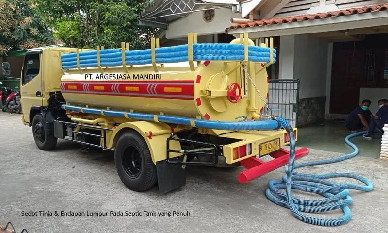
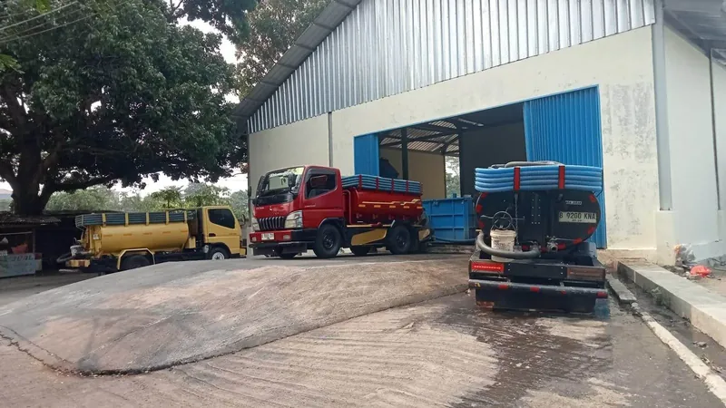
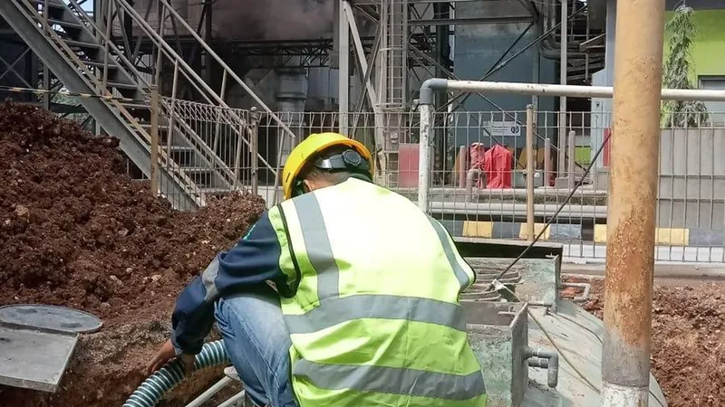
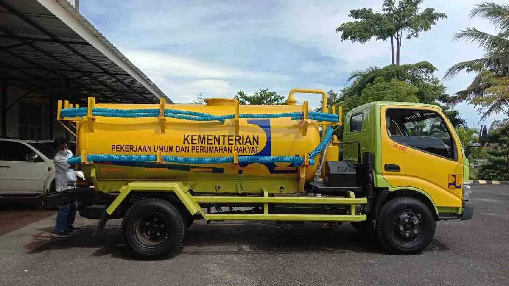

Sedot WC
Penyedotan WC untuk rumah tinggal, kos, dan ruko dengan peralatan yang disesuaikan dengan akses lokasi.
Lihat detail layanan


NARAYA Sedot WC & Solusi Sanitasi melayani rumah, kos, ruko, kantor, restoran, dan tempat usaha di Jakarta Selatan, Depok, Bogor, dan Tangerang Selatan (termasuk Pondok Aren). Biaya dikonfirmasi lewat WhatsApp sebelum teknisi berangkat.
Setiap layanan kami sesuaikan dengan kondisi di lapangan. Chat WhatsApp dulu supaya teknisi tahu apa yang harus dibawa.
Penyedotan WC untuk rumah tinggal, kos, dan ruko dengan peralatan yang disesuaikan dengan akses lokasi.
Lihat detail layananPenyedotan septic tank penuh untuk rumah tangga maupun tempat usaha, termasuk cek kondisi tangki.
Lihat detail layananPenanganan WC mampet yang tidak kunjung surut, termasuk pengecekan penyebab sebelum tindakan.
Lihat detail layananUntuk septic tank yang sudah penuh atau meluap dan perlu penyedotan segera.
Lihat detail layananPenyedotan limbah cair untuk restoran, kos-kosan, dan tempat usaha lain dengan volume lebih besar.
Lihat detail layananCek apakah lokasi Anda termasuk dalam area yang kami layani saat ini.
Lihat area layananHarga dikonfirmasi lewat WhatsApp sebelum teknisi datang, sesuai kondisi lokasi.
Cukup chat WhatsApp — tidak perlu isi formulir panjang untuk booking.
Rumah tinggal, kos, ruko, kantor, hingga tempat usaha dengan kebutuhan lebih besar.
Saat ini kami melayani Jakarta Selatan, Depok, Bogor, dan Tangerang Selatan (termasuk Pondok Aren).
Ceritakan kondisi WC atau septic tank Anda.
Kami infokan kebutuhan, estimasi harga, dan jadwal yang tersedia.
Kunjungan ke lokasi sesuai jadwal yang disepakati.
Proses penyedotan dilakukan dan lokasi dibersihkan kembali.
Kami memberikan estimasi biaya melalui WhatsApp berdasarkan informasi yang Anda sampaikan sebelum pekerjaan dijadwalkan. Dengan begitu, Anda memiliki gambaran biaya sejak awal sebelum layanan dilakukan.
Setiap permintaan layanan dicatat dan dikelola secara terstruktur untuk memudahkan proses penjadwalan, koordinasi teknisi, hingga tindak lanjut layanan.
Jika terdapat kondisi di lapangan yang dapat memengaruhi pekerjaan atau biaya, teknisi akan menginformasikannya terlebih dahulu sebelum tindakan tambahan dilakukan.

Taruh file di assets/img/trust-photo.jpg untuk mengganti foto ini
Testimoni Anda akan kami tinjau terlebih dahulu sebelum ditampilkan di halaman ini.
Biaya layanan sedot WC NARAYA bergantung pada lokasi, akses kendaraan, dan volume yang perlu disedot, dan selalu dikonfirmasi lewat WhatsApp sebelum teknisi berangkat.
Saat ini NARAYA melayani Jakarta Selatan, Depok, Bogor, dan Tangerang Selatan (termasuk Pondok Aren). Untuk lokasi di luar keempat area tersebut, kami belum bisa menjadwalkan penyedotan.
Tidak ada biaya yang muncul tiba-tiba. Jika teknisi menemukan kondisi lapangan yang memengaruhi pekerjaan atau biaya, hal itu diinformasikan lebih dulu sebelum tindakan tambahan dilakukan.
Umumnya sekitar 30 sampai 60 menit, tergantung volume dan akses menuju titik penyedotan.
Ya. NARAYA melayani rumah tinggal, kos, ruko, kantor, restoran, pabrik, dan tempat usaha lain yang membutuhkan penyedotan volume lebih besar.
Cara tercepat adalah chat WhatsApp. Sampaikan lokasi dan kondisi WC atau septic tank Anda, lalu NARAYA mengirimkan estimasi biaya dan jadwal yang tersedia.
NARAYA beroperasi setiap hari pukul 07.00 sampai 21.00 WIB.
Berikut sebagian area yang kami layani. Selengkapnya di halaman Area Layanan.
Chat WhatsApp kami dan ceritakan kondisinya — kami bantu arahkan langkah berikutnya.